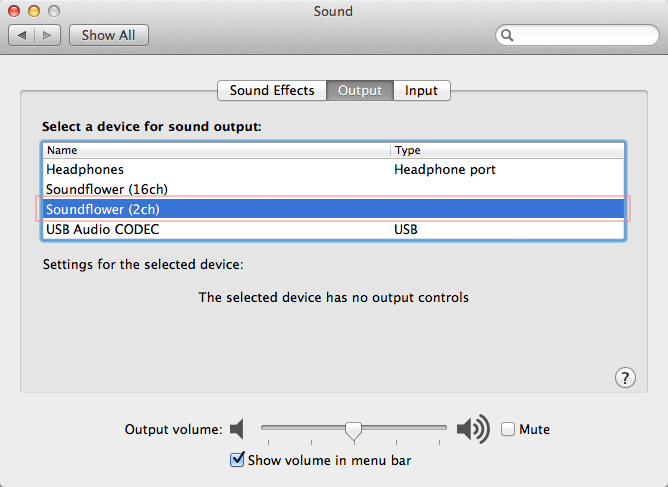
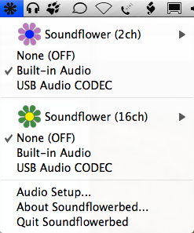

Tutorial - Recording Computer Playback on Mac
From Audacity Manual
| Copyright or website restrictions may prevent you recording or distributing material. Check first. |
Use Soundflower
Soundflower is a free open source system add-on for Mac computers that allows you to route what is playing on the computer digitally back to the input without using a cable. Set Soundflower as your system output device, then in Audacity, set Soundflower as your recording device.
- Download the latest version of Soundflower. It is possible that older versions of Soundflower may work better on older versions of OS X. Older versions of Soundflower may be obtained if necessary at https://code.google.com/p/soundflower/downloads/list.
- If the downloaded zip file does not extract automatically, double-click it to extract the DMG file it contains, or use your favorite extraction utility. To install the extracted DMG file, double-click it to mount it. In the DMG itself, double-click the PKG file.

If you see a warning on OS X 10.7.5 or later that Soundflower cannot be opened due to your Security Preferences, right-click or control-click over the PKG file and choose "Open", then choose "Open" again. - After opening the PKG file, you may see a warning that the certificate for the installer has expired. Press "Show Certificate" to review the certificate then choose "Continue".
- Then run through the standard installer steps. Save your work in other applications, then press the button in the installer to restart your Mac.
- Choose and select the Sound preferences panel.
- In the Sound preferences panel, choose the Output tab, then select "Soundflower (2ch)" from the "Select a device for sound output:" list and turn the Output volume up.
- 
- In the same panel, choose the Input tab, select "Soundflower (2ch)" and and turn the Input volume up.
- At this point you will no longer be able to hear what is playing on the computer. The sound output of the computer is being sent to Soundflower.
- Click on the "Sound Effects" tab, and from the "Play sound effects through" dropdown menu choose "Line Out", "Headphones" or "Internal Speakers" (whichever is appropriate for your system).
- This will route some system alert sounds (such as Mail alert sounds) to the Line Out or Internal Speakers and not to Soundflower. Thus these sounds will not be recorded by Audacity.
Some Macintosh applications are better behaved than others when it comes to alert sounds. Tests on a recent iMac running 10.7.2 show that Mail and TextEdit alert sounds will not be recorded with the above setup, but iCal and Yahoo Messenger alert sounds will be recorded. To be safe you should disable the sound on any iCal alerts that may occur while you are recording, and quit any other program that may make an alert sound.
- This will route some system alert sounds (such as Mail alert sounds) to the Line Out or Internal Speakers and not to Soundflower. Thus these sounds will not be recorded by Audacity.
- Close the System Preferences window.
- Start Audacity.
- In Audacity's Device Toolbar, select Built-in Output
 or similar as Playback Device and Soundflower (2ch) as Recording Device.
or similar as Playback Device and Soundflower (2ch) as Recording Device.
- Click on the menu and make sure that "Software Playthrough" is checked.
- Go to the application that will be playing the sound you want to record. For example, start Safari and go to a website that plays sound clips. Start some audio playing.
- Click on the recording level meters (beside the microphone symbol) to begin monitoring:

- You should now be able to hear the sound playing on your computer.
- Now click Record to record anything playing on your computer.
To set things back to "normal" so you can hear audio playing on your computer without running Audacity
1) Click on then the Sound panel, and select the Output tab. Select "Line Out", "Internal Speakers" or "Headphones" in the output device list. See step 3 above for an illustration.
2) In Audacity, if you want to record from a different source (such as the Line Input or an external USB device), click on then the Devices section and select the input you want to record from in the Recording section. See step 7 above for an illustration.
For help if you're stuck
Visit the Mac 2.0.x forum, click the "New Topic" button and ask your question.
To hear what is playing on the computer while using Soundflower
When you install Soundflower, a new folder will be installed in your Applications folder called "Soundflower". Inside the folder is a program called "Soundflowerbed". Launch Soundflowerbed: it will install a "flower" menu at right of your menu bar.
- 
The choices below the "Soundflower (2ch)" and "Soundflower (16ch)" menu items determine how the output of Soundflower will be monitored. "None (OFF)" means that you will not hear anything from your computer speakers. Selecting "Built-in Audio" will allow you to hear (monitor) the sound that is passing through Soundflower.
If you are using Soundflowerbed to monitor the sound, you will want to uncheck "Software Playthrough" in Audacity's Transport menu.
The original Soundflowerbed could not restart itself if the system was put to sleep then resumed. You can download a modified version that solves that problem and adds a volume control to Soundflowerbed.
Use a loopback cable
This is a simple and effective method of recording what is playing on the computer. It has the disadvantage that the audio signal is converted from digital to analog, then from analog to digital, instead of staying in the digital domain. This may result in some slight increase in noise and distortion.
- Using a cable with a stereo mini-plug (1/8") at each end, connect the headphone output port to the line input port.
- At this point you will no longer be able to hear what is playing on the computer. As a workaround, you could attach a single to double stereo connector to the output port provide an extra jack for speakers or headphones.
- Choose and select the Sound preferences panel.
- In the Sound preferences panel:
- Click on the Output tab, then select "Line Out" from the "Choose a device for sound output" list.
- Click on the Input tab, then select "Line Input" from the "Choose a device for sound input" list.
- Leaving the Sound preferences panel open, start sound audio playing on the computer (this could be from iTunes, or streaming audio, or some other source).
- Adjust the Input volume slider so that the top 3 bars of the Input level meter do not light up on the loudest passages, but the rest of the bars do light up.
- Close the System Preferences window.
- In Audacity's Device Toolbar select Built-in Input or similar as Recording Device. Note you need to choose a line-in for this, not a four-position port meant only for connecting a headset.
- Click on the Transport menu and make sure that "Software Playthrough" is not checked.
|
All system alert sounds such as email and program alerts will be recorded using this method. If you have iCal alerts or have turned on event sounds in Mail, you may want to turn them off. You should also quit any program that may make an alert sound while you are recording. |
Audio Hijack Pro
This is a commercial program sold by Rogue Amoeba. It can "hijack" the sound output of any program and record that audio to disk in a number of formats. Once you have captured the audio with Audio Hijack Pro you can import the file into Audacity for editing. Since Audio Hijack Pro records the sound output of a particular program there is no danger of recording system alert sounds.
If you need help editing the audio captured by Audio Hijack Pro, have a look at our tutorial on editing an existing file.